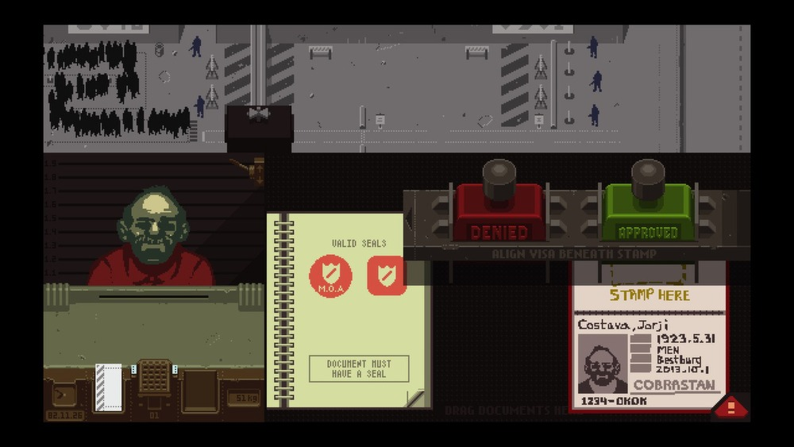

AI in the Courts: How Worried Should We Be?
Paul W. Grimm, Cary Coglianese, Maura R. Grossman | Judicature | ARTICLE
Grimm, W. Paul, et al. “Ai in the Courts: How Worried Should We Be?” Judicature, 15 Aug. 2024,
judicature.duke.edu/articles/ai-in-the-courts-how-worried-should-we-be/.
"AI in the Courts" explores speculative futures with judicial artificial intelligence at the helm. What might crime and legal proceedings look like if led by AI? This work is highly relevant by its focus on human-AI interaction and ethical decision-making. It is particularly interesting in that it lies in the grey area, noting that AI can have both positive and negative consequences. Positive for its efficiencies, negative for its biases. It prompts critical debate regarding bias, accountability, misinformation.
With current courtrooms consistently under scrutiny for corruption or discrimination, would a future led by AI be any different? Are we that far from the things we create? They emphasize that while AI may increase efficiency, it also risks dehumanizing justice and amplifying bias. Despite this covering current AI introductions such as deepfakes, falsified generated evidence, and even chatbot lawyers, it also inspires ethical and speculative thinking. It may be intriguing to take on the role of AI in the courtroom and face consequences of their "objective" decisions.
Papers, Please
Lucas Pope | VIDEO GAME

Pope, Lucas. Papers, Please, 2013, papersplea.se/.
Papers, Please is a dystopian indie game created in 2013 by Lucas Pope. In the game, players take on the role of an immigration officer in a fictional authoritarian state, grappling between making moral decisions, completing your duties, and protecting your family. While the game does not directly involve artificial intelligence, this is a staple reference on ethical decision-making gameplay. Each decision made has a hidden tradeoff that may affect the player in the future, whether it affects their safety, their family, or their career.
Forcing players to make complex moral choices under time constraints highlights how systems can pressure individuals to make unethical decisions. This mechanic directly parallels how AI systems may operate with rigid logic and data without consideration over human nuance. Even within a bureaucratic rule-based system, small decisions can lead to serious ethical consequences for multiple parties. This game is a great lesson on tension-building, decision-making, and exploring morality.
This Person Does Not Exist
Phillip Wang | WEBSITE
This Person Does Not Exist. Created by Phillip Wang, 2019, www.thispersondoesnotexist.com/.
This Person Does Not Exist is an AI image-generation website created by Philip Wang using NVIDIA's StyleGAN2. Each time the page is refreshed, it produces a hyper-realistic human face that does not actually belong to a real person. While functionally simple, it shows how potentially dangerous and advanced generative AI truly is. It showcases how easily synthetic media can mirror reality, which raises concerns about identity, consent, and misuse of fabricated material.
Its minimal interface and unsettling implications make it a powerful warning sign. It uses similar technology to deepfakes which spark conversations around misinformation and trust in digital evidence—particularly within legal boundaries. Not only does this site raise awareness on the implications and advancements of generative AI, it also challenges our assumptions on authenticity and what it means to be human.